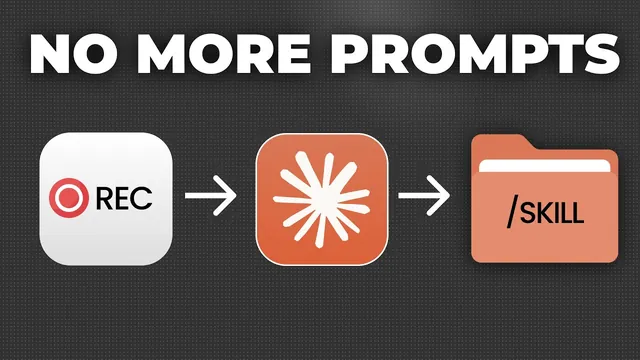

클로드 스킬 만들기가 10배 쉬워졌다

원본 영상 보기 →
- 암묵지는 코드가 아니라 '시연'으로 옮겨요
- 스킬 만들기는 프롬프트가 아니라 인턴 온보딩이에요
- 작게 시작하는 것이 성패를 가릅니다
한 줄 요약
클로드 데스크톱의 Cowork 탭에 '스킬 녹화(record a skill)' 기능이 새로 생겼어요. 반복 업무를 하는 화면·클릭·음성을 그대로 녹화하면 클로드가 이를 재사용 가능한 스킬로 바꿔주는 기능인데요. Ben은 이 기능이 프롬프트로 스킬을 만드는 것보다 훨씬 효율적인 이유(폴라니의 역설)와, 실제로 신뢰할 수 있는 스킬을 만드는 4가지 원칙, 그리고 이메일 분류 스킬을 만드는 라이브 시연을 보여줍니다.
전체 내용 정리
클로드의 '스킬 녹화' 기능은 어떻게 작동할까요
클로드 데스크톱 앱의 Cowork 탭에서 플러스(+) 아이콘을 누르면 '스킬 녹화(record a skill)' 옵션이 새로 생겼어요.
이 기능은 녹화를 시작한 뒤 사용자의 화면, 모든 클릭, 입력하는 텍스트, 그리고 가장 중요하게는 목소리까지 함께 기록합니다.
녹화를 켠 상태에서 매일 하는 반복 업무(예: 받은편지함 정리)를 직접 해 보이면서, 무엇을 왜 하는지를 말로 설명하면 돼요. 마치 신입 직원이나 인턴에게 업무를 인수인계하듯이요. '완료'를 누르면 클로드가 이 녹화를 재사용 가능한 스킬로 변환해 그 업무를 대신 자동으로 처리해 줍니다.
Ben은 이 방식으로 Gmail 받은편지함 분류(triage) 스킬을 만들었어요. 녹화에 담긴 자신의 내레이션과 취한 행동들의 스크린샷을 클로드가 분석해 스킬을 만들어 줬고, 지금은 매일 자동으로 실행되면서 실제로 잘 작동하고 있다고 말합니다.
왜 프롬프트보다 녹화가 더 나을까요 — 폴라니의 역설
Ben이 이 방식을 대부분의 경우 프롬프트보다 효율적이라고 보는 이유는 '폴라니의 역설(Polanyi's paradox)' 때문이에요.
전문성이 작동하는 방식을 연구한 과학자 마이클 폴라니(Michael Polanyi)의 책에서 나온 개념인데요. 어떤 일을 많이 할수록 그 일은 자동화되고, 그럴수록 머릿속에는 말로 표현할 수 없는 지식이 쌓인다는 겁니다.
한마디로 "우리는 말할 수 있는 것보다 더 많이 알고 있다"는 거죠.
그래서 어떤 프로세스를 프롬프트로만 클로드에 설명하려고 하면, 실제로 눈으로 봐야만 설명할 수 있는 예외 상황과 자잘한 규칙들이 빠진 프로세스를 적게 됩니다.
예를 들어 Ben은 이메일 유형별로 어떻게 처리할지에 대한 확고한 규칙이 머릿속에 있어요. 하지만 막상 그 상황을 보지 않으면 말로 옮기기 어려운 예외와 뉘앙스가 존재하거든요.
프로세스를 기억해 내서 설명하는 대신 그냥 직접 해 보이면, 클로드는 표현하기 어려운 예외와 뉘앙스까지 실제로 보면서 이해합니다.
본질적으로 '말하지 말고 보여줘라(show, don't tell)' 원칙이에요. 그리고 이건 인간이 무언가를 배우는 가장 효율적인 방식이기도 하죠.
신뢰할 수 있는 스킬을 만드는 4가지 원칙
Ben은 이 기능으로 실제로 업무를 안정적으로 자동화하려면 몇 가지 원칙을 지켜야 한다고 말해요.
첫째, 작은 범위로 시작하세요. 30분짜리 전체 프로세스를 하나의 스킬이나 하나의 녹화에 담으려 하지 마세요. 보통 나쁜 스킬로 이어집니다. AI로 업무를 자동화하고 스킬을 만들 때는 MVP(최소 기능 제품) 접근이 필요해요. 자동화하려는 프로세스 중 그래도 가치가 있는 가장 작은 부분이 무엇인지 생각하고 거기서만 시작한 뒤 확장하세요. 나중에 스킬에 기능을 더하거나, 이어서 실행할 새 스킬을 만들면 됩니다.
둘째, 어느 정도 계획이 필요해요. 세 가지를 챙기세요. (1) 이 작업에 쓸 탭이나 소프트웨어를 모두 미리 열어 둬서, 관련 없는 탭 사이를 왔다 갔다 하지 않도록 합니다(클로드를 혼란시켜 스킬 품질을 떨어뜨리거든요). (2) 녹화 시작 시점에 목표와 무엇을 할 것인지를 명확히 말하세요. 이것이 나머지 모든 것에 맥락을 부여합니다. 잠깐 고민해서 짧게 적어 본 다음 녹화 안에서 소리 내어 말하는 게 좋아요. (3) 무엇을 할지 대략적인 그림은 갖고 있으세요. 녹화 중에 좀 두서없이 말하거나 스스로 정정해도 상관없지만, 반복 업무라면 이 단계가 가장 쉬울 거예요.
셋째, 하는 모든 행동을 내레이션하세요. 인턴에게 이 업무를 실시간으로 가르친다고 생각하면 쉬워요. 핵심은 무엇을 하는지만 말하지 말고 왜 하는지를 말하는 겁니다. Ben의 경험상 좋은 스킬을 얻는 데 가장 중요한 것 중 하나라고 하네요.
넷째, 반복적인 과정임을 받아들이세요. 스킬을 만들고 프로세스를 자동화하는 것은 직원이나 인턴을 온보딩하는 것처럼 언제나 반복적인 과정이에요. 초기 스킬을 만든 뒤에는 그 스킬을 실행해 보고, 같은 녹화 기능을 써서 클로드가 한 일을 검토하며 피드백과 수정 사항을 사람에게 하듯 전달하면 스킬을 아주 빠르게 최적화할 수 있습니다. 이 방식은 이미 쓰고 있거나 예전에 만들어 둔 스킬을 개선할 때도 훨씬 효율적이에요.
라이브 시연 (1): 스킬에게 목표부터 설명하기
Ben은 이메일 분류 스킬을 만드는 과정을 라이브로 보여줘요.
'스킬 녹화'를 누른 뒤, 실제 작업을 하기 전에 먼저 목표와 스킬이 해야 할 일을 클로드에게 설명합니다. 요지는 이랬어요.
"받은편지함을 정리하는 스킬을 만들고 싶다. 편지함이 빠르게 찬다. 각 이메일 유형에 무엇을 해야 할지 맥락을 주기 위해 내가 직접 하는 방식을 보여주겠다. 이메일 유형에 따라 (a) 중요하지 않은 메일은 읽음 처리해 정리하고, (b) 답장이 필요하거나 중요해 보이는 메일은 플래그를 달고, 그런 메일은 내 보이스 스킬을 써서 내 말투로 초안 답장을 작성해 편지함에 초안으로 넣어 두면 나중에 내가 보내거나 조정한다. (c) 그런 중요한 메일은 읽지 않음 상태로 둬서 내가 읽어야 함을 알게 한다. (d) 일부 메일은 라벨을 붙여야 한다(예: 파트너십 메일). (e) 일부 메일은 전달(forward)해야 한다."
라이브 시연 (2): 받은편지함을 이메일 유형별로 훑기
Ben은 편지함을 하나씩 넘기면서 유형별 처리 방식을 말로 설명해요.
채용 폼에 지원한 사람의 메일은 자주 오지는 않지만, 지원해 줘서 고맙고 검토 후 연락하겠다는 답장을 빠르게 보냅니다.
유료 협업(paid collaboration) 제안은 자주 오는데요. 지금 YouTube 채널로 유료 협업은 하지 않지만 가끔 훑어보므로 'partnerships' 라벨을 달아 나중에 확인해요.
소프트웨어 알림(RunPod, 캘린더 초대 등)은 미결제 같은 정말 중요하거나 급한 게 아니면 그냥 읽음 처리합니다.
자신의 사업(AI Accelerator, AI operator 프로그램, AI 에이전시)에 대해 더 알고 싶어 하는 사람의 메일은 항상 공동창업자 Oscar(oscar@ben.ai)에게 전달해서 그가 답하거나 세일즈 콜을 잡도록 해요.
뉴스레터에 답장한 사람들의 메일은 히스토리로 식별할 수 있는데요. 특별히 뭔가 묻지 않으면 읽음 처리하고, 질문이나 진지한 피드백이 있으면 초안 답장을 작성해 읽지 않음 상태의 답장으로 넣어 둡니다("분위기를 읽어라"는 거죠).
자기 자신이 보낸 메일(은행 명세서 등)은 읽음 처리해요.
서비스를 파는 콜드 이메일은 보통 읽음 처리하고, 네 번씩 계속 보내는 경우엔 수신 거부해 달라는 답장 초안을 만듭니다.
구독 중인 뉴스레터는 'need to read' 라벨을 붙이고 읽음 처리해 편지함을 정리하되, 읽고 싶을 때 그 탭에 들어가 읽어요.
시연 마무리: 리포트·자동 실행·테스트, 그리고 커넥터
Ben은 마지막으로 클로드에게 추가 지시를 합니다.
한 일을 전부 리포트로 정리하고, 내가 회신해야 할 중요한 메일을 맨 위에 플래그해서 보여주고, 이 스킬을 매일 오전 9시에 자동 실행되도록 예약하고, 스킬을 만들 때 테스트를 한 번 돌려서 실제로 작동하는지 검토할 수 있게 하라고요. 그리고 이메일은 절대 직접 보내지 말고 초안 답장만 추가해서, 내가 확인하고 조정한 뒤 보내게 하라고 했어요.
클로드는 이 전체 트랜스크립트와 녹화를 바탕으로 스킬을 만들고 테스트를 실행합니다.
Ben은 그 테스트 결과를 같은 녹화 기능으로 검토하면서 무엇을 잘못했고 무엇을 잘했는지 수정 사항을 주면 스킬을 바로 최적화할 수 있다고 해요. 안정적으로 작동하는 스킬을 얻으려면 거의 항상 이 과정을 최소 한 번은 해야 한다고 덧붙입니다.
실제 이메일을 보지 않았다면 결코 떠올리지 못했을 자잘한 뉘앙스가 많았고, 그 모든 뉘앙스가 이제 스킬에 직접 새겨져 순수 프롬프트보다 훨씬 나은 스킬이 됐다는 거죠.
클로드는 필요하면 질문을 하고, 스킬을 실행할 특정 커넥터를 제안하기도 해요. 커넥터가 없으면 브라우저를 쓰지만, 해당 소프트웨어에 접근할 커넥터를 두는 편이 훨씬 효율적입니다. Ben의 경우 클로드가 트랜스크립트를 분석한 뒤 Gmail 커넥터를 제안해, 브라우저보다 훨씬 효율적으로 작업을 수행했다고 하네요.
Ben은 이 기능을 꼭 탐색해 보라고 권하며, 스킬을 한 단계 더 끌어올리려면 스킬 파일 자체도 베스트 프랙티스에 맞게 최적화해야 한다고 덧붙여요.
핵심 인사이트
- 암묵지는 코드가 아니라 '시연'으로 옮겨요: 폴라니의 역설("우리는 말할 수 있는 것보다 더 많이 안다") 때문에 프롬프트로 프로세스를 설명하면 예외와 뉘앙스가 빠집니다. 눈앞의 실제 상황(실제 이메일)을 보면서 해야만 나오는 규칙이 있고, 녹화는 그것을 통째로 포착하죠. 자동화의 병목이 '내 업무를 얼마나 잘 문서화하느냐'에서 '내 업무를 그냥 한 번 해 보이느냐'로 바뀌는 거예요.
- 스킬 만들기는 프롬프트가 아니라 인턴 온보딩이에요: 무엇을 하는지가 아니라 왜 하는지를 말하는 것이 좋은 스킬의 핵심이고, 한 번에 완성되지 않습니다. 실행 → 검토 → 피드백 루프를 같은 녹화 기능으로 반복해야 해요. AI 자동화를 '설정하고 끝'이 아니라 '가르치고 교정하는 관계'로 봐야 한다는 뜻이죠.
- 작게 시작하는 것이 성패를 가릅니다: 30분짜리 전체 프로세스를 한 녹화에 담으면 나쁜 스킬이 나와요. 가치가 나오는 가장 작은 조각부터 자동화하고 확장하세요. 이건 녹화 기능뿐 아니라 모든 업무 자동화에 적용되는 원칙입니다.
- 커넥터가 있으면 브라우저보다 훨씬 효율적이에요: 클로드는 녹화를 분석한 뒤 실행에 쓸 커넥터(예: Gmail)를 스스로 제안하며, 커넥터 기반 실행이 브라우저 조작보다 안정적이고 빠릅니다. 자동화를 붙이려는 도구에 공식 연동이 있는지부터 확인할 가치가 있어요.
오늘 당장 해볼 것
- 매일 또는 매주 반복하는 화면 작업(받은편지함 정리, 주문 확인, 리포트 취합 등) 중 가장 단순한 것 하나를 골라보세요. 30분짜리 전체가 아니라 "그래도 가치가 나오는 가장 작은 조각"으로 범위를 좁혀 종이에 한 문장으로 적어보시면 됩니다.
- 그 작업에 쓰는 탭·프로그램을 미리 다 열어 두고, 시작할 때 말할 목표 문장("이 스킬은 ~을 위해 ~을 한다")을 3~4줄로 써 두세요. 클로드 데스크톱 Cowork 탭의 플러스 아이콘 → '스킬 녹화'로 녹화하면서, 각 단계에서 무엇을 하는지가 아니라 왜 그렇게 하는지를 소리 내어 설명하시고요.
- 만들어진 스킬을 테스트로 한 번 돌린 뒤, 결과를 다시 녹화 기능으로 검토하며 "이 케이스는 이렇게 했어야 한다"는 교정 피드백을 주세요. 한 번에 완성하려 하지 말고 최소 1회 개선 루프를 돌린 뒤 자동 실행(예: 매일 오전 9시)으로 넘기시면 됩니다. 이메일·메시지 발송처럼 되돌리기 어려운 동작은 "직접 보내지 말고 초안만"으로 지시하시는 게 안전해요.